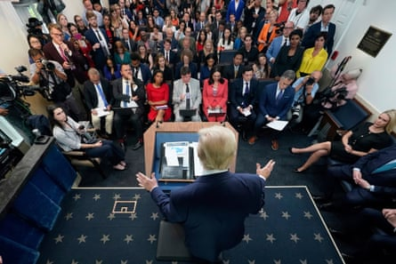

H e strode into the White House briefing room feeling invincible. In his own telling, he had fixed the Middle East. He had made Nato pay up. He had pacified the heart of Africa. And now Napoleon Trump had once again just been crowned emperor by the US supreme court .
“We’ve had a big week,” Donald Trump , orange hair shimmering, blue tie drooping below the waist, mused from a lectern anointed with the presidential seal. “We’ve had a lot of victories this week.”
The highest court had just handed the president another win by curbing the power of federal judges to impose nationwide rulings impeding his policies – though it left unresolved the issue of whether he can limit birthright citizenship.
Unable to contain his glee, Trump came to talk to the press – something his predecessor Joe Biden rarely did – to goad the “fake news” while basking in glory from the Maga-friendly media.
The president hailed the court’s decision as a “monumental victory for the constitution, the separation of powers and the rule of law” and gloated – with some hyperbole – that “there are people elated all over the country”. He looked forward to taking aim at targets such as birthright citizenship, sanctuary city funding and refugee resettlement.
In the abstract, there is a reasonable debate to be had over how much power the judiciary should have to curb an elected leader’s agenda. The attorney general, Pam Bondi, has described it as a “bipartisan problem” that has plagued five different presidents. A decade ago Barack Obama expressed frustration when a district court temporarily blocked his executive actions on immigration.
In the court’s majority opinion, the conservative justice Amy Coney Barrett rejected liberal justice Ketanji Brown Jackson’s contention that they were neglecting their duty to protect the people from government overreach. “Justice Jackson decries an imperial Executive while embracing an imperial Judiciary,” Barrett wrote.
But context is everything. Trump has marginalised Congress, sued the media in an effort to chill free speech, assailed cultural institutions and universities and deployed the military against peaceful protesters. The courts have been leading the way in safeguarding democracy from his authoritarian impulses. Now they too are on the ropes.
Asked by a reporter if the supreme court decision concentrates too much power in the White House, Trump insisted: “The question is fine but it’s the opposite. The constitution has been brought back.”
Yet the supreme court that decided to make the strongman even stronger contains three Trump appointees and last year found that former presidents have presumptive immunity from prosecution for “official acts” – in effect putting Trump above the law. The four criminal investigations that once dogged him now feel like ancient history.
Donald Trump addresses the media.Photograph: Jacquelyn Martin/AP
Trump was asked a question by a reporter from LindellTV , a news organisation founded by Mike Lindell, a conspiracy theorist and founder of MyPillow, about whether he would like to see a justice department investigation of the judges whose rulings allowed the cases to proceed against him while he was out of office. “I love you,” Trump said in response to the question, adding: “I hope so.”
It has been exactly 12 months since he debated with Biden and discovered an opponent in chronic decline. Democrats panicked and imploded, Trump survived an assassination attempt and rode his good fortune all the way to the White House.
It is small wonder that the 79-year-old now considers himself untouchable, acting with impunity at home and abroad, holding freewheeling press conferences like Friday’s without fear of consequences.
“Illegal crossings at the border are at zero now,” a reporter said.
Trump interjected: “Zero! Does everyone hear that?”
A cameraman in the briefing room shouted: “Trump 2028!”
Later Trump reiterated his claim that Iran’s nuclear sites had been obliterated and lamented: “We had some fake news for a little while – the same people that covered the Hunter Biden laptop was from Russia … I don’t believe that they’re going to go back into nuclear anytime soon.”
He also used the briefing to take a swipe at Jerome Powell , chair of the Federal Reserve, for not lowering interest rates. “We have a man who’s not a smart man, and he probably has Trump Derangement Syndrome.”
Later on Friday the White House would host leaders from the Democratic Republic of the Congo and Rwanda to sign a peace deal to end years of fighting. Trump cheerfully admitted: “I’m a little bit out of my league in that one because I didn’t know too much about it. ” He also noted that the US would gain access to critical minerals in the region.
Trump even ruminated on threats to his life, including proxy groups from Iran that may issue threats, and referenced the bullet that struck his ear last summer in an attempted assassination. He gets “that throbbing feeling every once in a while”, he said.
“What I do is a dangerous business. You know, I tell the story of the car companies and different people in different professions. You have race car drivers, as an example, one-tenth of 1% die. Bull riders, one-tenth of 1%. That’s not a lot, but people die. When you’re president, it’s about 5%. If somebody would have told me that, maybe I wouldn’t have run. This is a very different profession.”
As raised hands in the room clamoured for attention his political lizard brain spotted an opportunity to bash his predecessor. “This is the opposite of Biden. Biden would take a half a question and he’d leave without answering it … You tell me when it gets boring, OK?”